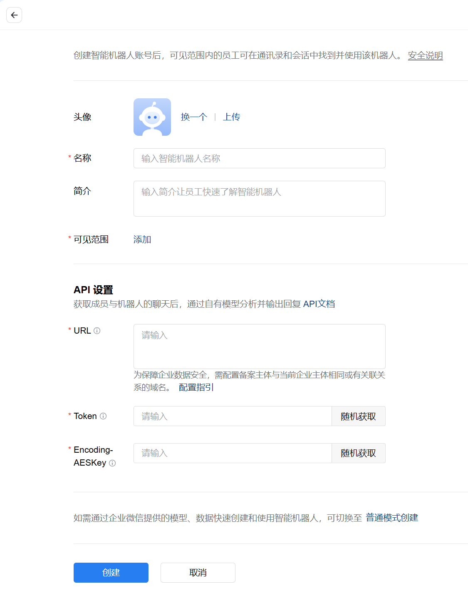
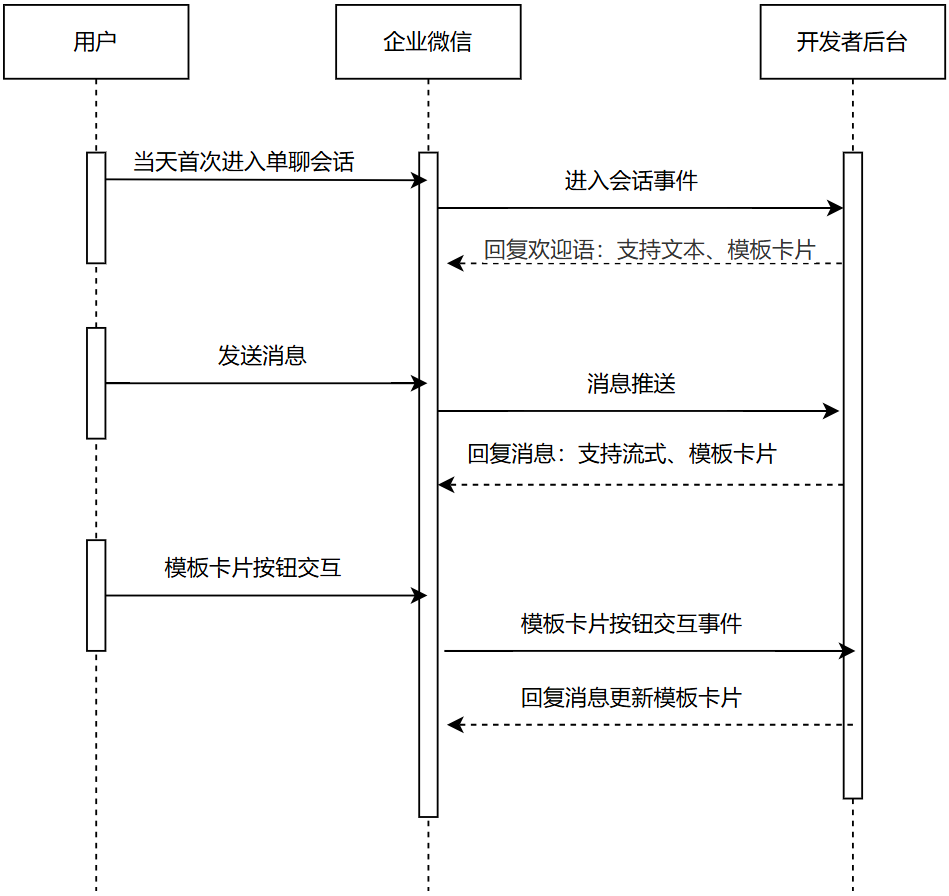

目录
API设置接收回调与被动回复示例代码API设置
若智能机器人开启API模式，当用户跟智能机器人交互时，企业微信会向智能机器人API设置中的URL的回调地址推送相关消息跟事件。

配置URL时，需要验证url有效性。
接收回调与被动回复
当用户跟智能机器人交互时，企业微信会向智能机器人的回调URL上推送相关消息或者事件，开发者可根据接收的消息或者事件，被动回复消息。具体流程如下：

接收消息与被动回复消息都需加密，加密方式参考回调和回复的加解密方案。
示例代码
我们以python为例，提供了一份示例代码，以供开发者参考（包含python2与python3两个版本）：点击下载。